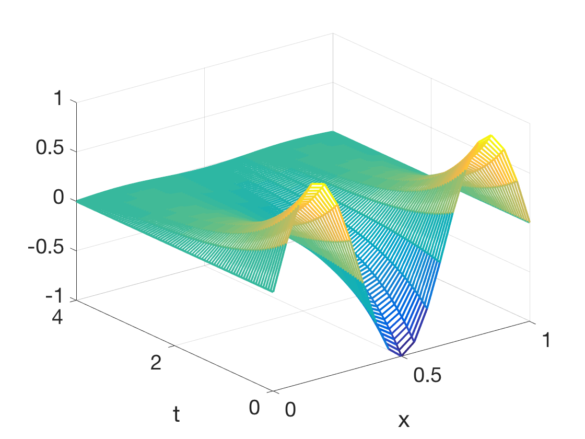
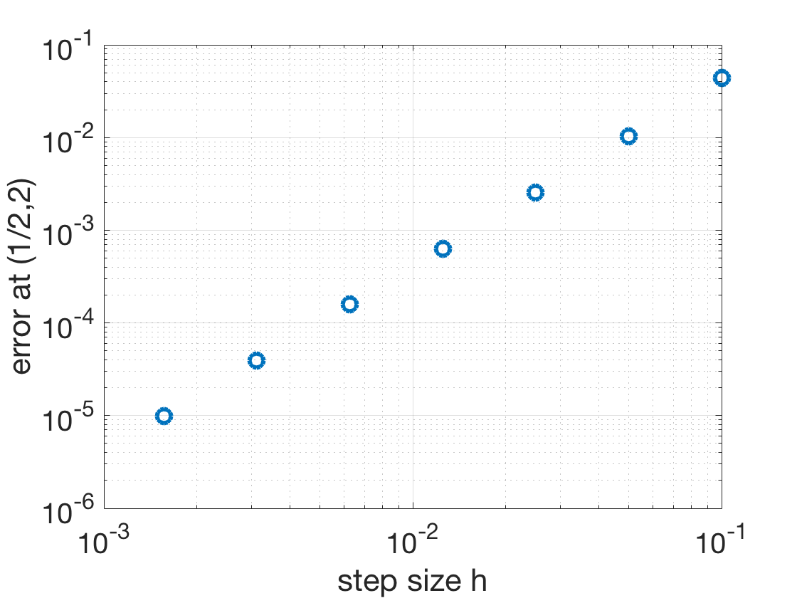

Additional Examples 8.1
1 Prove that \(u(x,t) = \frac{1}{\sqrt{t}}e^{-kx^2/t}\) satisfies the heat equation \(u_t = \frac{1}{4k}u_{xx}\) on \( (0,\infty).\)
The partial derivatives are:
\begin{eqnarray*}
u_t &=& \left[-\frac{1}{2}t^{-3/2}+t^{-1/2}(-kx^2)(-t^{-2})\right]e^{-kx^2/t}\\
&=& -t^{-3/2}e^{-kx^2/t}\left[\frac{1}{2}-\frac{kx^2}{t}\right]\\
u_x &=& -t^{-3/2} 2kxe^{-kx^2/t}\\
u_{xx} &=& -2kt^{-3/2}e^{-kx^2/t}\left[1-\frac{2kx^2}{t}\right]
\end{eqnarray*}
It is easy to check that \(4ku_t = u_{xx}.\)
2 Apply Crank-Nicolson to approximate the solution of the heat equation with boundary conditions
\[ \left\{
\begin{array}{l}
u_t = \frac{1}{9\pi^2} u_{xx}\\
u(x,0) = \sin 3\pi x\\
u(0,t) = u(1,t) = 0
\end{array} \right. \]
on \(0\leq x\leq 1\) and \(0\leq t\leq 4.\)
Plot the solution for step sizes \(h = k = 0.05.\) Compare the approximate solution to the exact solution \(u(x,t)=e^{-t}\sin 3\pi x\) by plotting the error at \((x,t)=(1/2,2)\) for \(h=k = 0.05\times 2^{-i}\) for \(i=0,\ldots,6.\)
The crank.py code can be used with the initial conditions given and diffusion coefficient \(D=1/(9\pi^2).\) The solution for \(h=k=0.05, M=20, N=80\) is plotted in the first figure below.
The same code can be run with six more halvings of the step size, and the error at \((x,t)=(1/2,2)\) is shown in the second figure. Note the slope of 2 in the log-log plot, which corresponds to the fact that the truncation error for Crank-Nicolson is \(O(h^2)+O(k^2).\)

